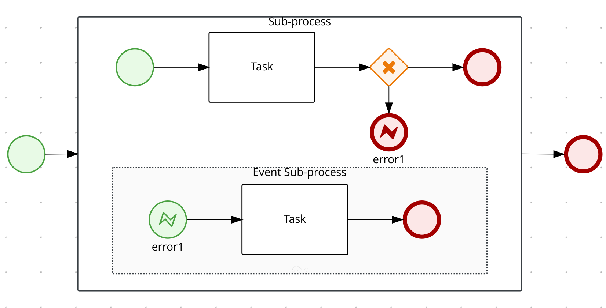
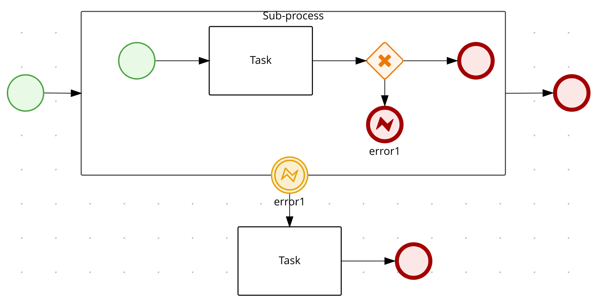
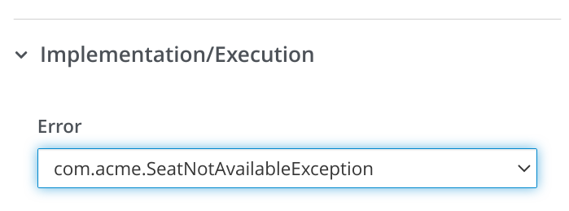
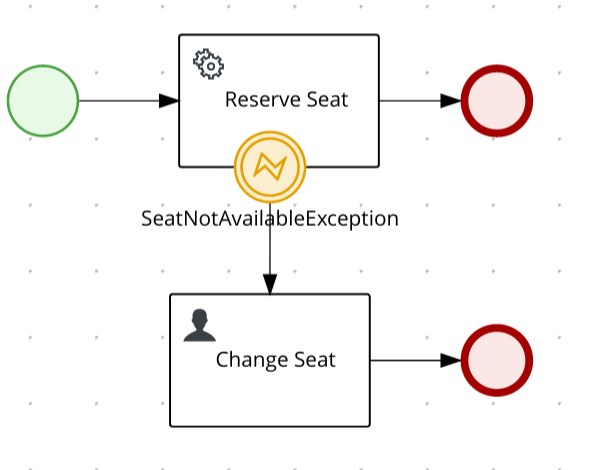
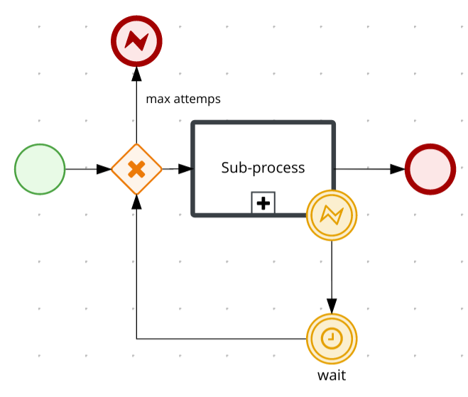

Error handling in Kogito
What are errors within processes?
First, we need to define the most usual type of errors, they can be divided into two main categories: technical and business errors.
Technical Errors could be defined as general errors that are not explicitly handled by the process, for instance, a database communication or constraint issue, a network connection that is down, or even an external service that is not responding. These errors are hidden and harmless for the process itself, which means the system and internal logic might have capabilities to handle them, like retries upon certain failures, or a more critical technical error may cause the transaction to fail, rolling back changes and keeping the process in a consistent state.
Business Errors, on the other hand, are related to the domain of a given process and are handled in the process declaration with a specific business meaning, that triggers an alternative flow to properly handle that situation, for instance, a credit limit exceeded, an item out of stock or even fraud that was detected in the payment process.
In this post, let’s focus on the business errors and the error events supported in Kogito after the 1.8 release.
Error Events
Error events are events that are triggered by a defined known error. In BPMN, an error is meant for business errors and allows us to explicitly model errors with an alternative flow for them; they are represented by a flash symbol.
Start Error Event

End Error Event

Boundary Error Event
A boundary error event is placed in the boundary of an activity, for instance, an embedded subprocess or a service task, and indicates a specific error defined by the error code, can be caught within the scope of the activity in which it is hooked to.
When an end error event is achieved, its referred error is thrown and it will be propagated upwards to its parent until the point an error boundary event is found, as already mentioned, where it matches the given error code from the thrown error.
The activity where a boundary error is defined and all the nested ones, like any other subprocess, are stopped. The process continues from the sequence flow attached to the boundary error event.
Another point of observation might be that an event subprocess if added to an embedded subprocess, could become an alternative to the use of a boundary event.

Exceptions as Errors
In Kogito it is provided a way to use Java Exceptions to be mapped to Errors, to use this feature, the FQN of the exception class should be used as the error code in the process, but keep in mind this is just an alternative in the case where the error could not be properly thrown as an Error Event in the process. The exception mapped to error works in some specific locations like in a Service Task implementation, in a custom work item handler, or even in a Script Task.
In general, this feature should only be used in some edge cases where you need to turn a technical error (exception in your code) into a business error, that is not the standard behavior, but it could be useful in some situations and in this case the process takes control of the alternative flow when this error happens.


Retry using error events
When designing a process it might be useful to explicitly declare a retry logic when some unexpected situation occurs, this is useful for long-running actions, and it is not recommended for short-lived ones that in general are technical errors like an HTTP request timeout, that could be handled by the HTTP client library instead of the process itself.
Error events could be an alternative to do retries inside the process flow. For example, we could consider a process as follows, where we retry to execute an action, declared in a sub-process, upon a condition where a certain error event is thrown, in this situation the error is caught and a timer could be used to wait for some time before executing the same operation again.

Conclusions
The business error handling in the process has advantages compared to the exception handling in the code itself, where we could consider technical errors. So this clear separation of errors types is important to simplify the complexity of a system.
It is possible to see and easily monitor what happens in the process when unexpected situations happen, it allows us to easily measure unexpected situations and it makes the process easy to evolve and to be maintained like changing an alternative flow to another flow upon an error.
Error handling capability provided by Kogito is important to be considered when designing processes and it brings many benefits, that’s why creating the business logic to handle business errors and isolating them from internal technical errors should be taken into account in the whole system architecture.
Show me the code!
In the next blog post, let’s use the Error Events that were covered here in concrete examples where you be able to run and test.